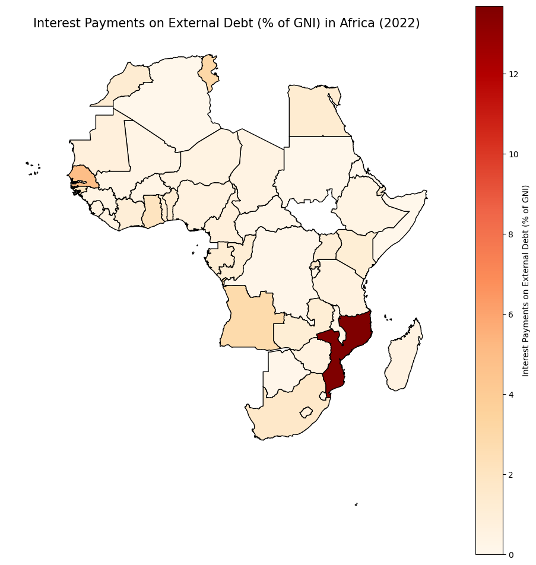

import altair as alt
import warnings
warnings.filterwarnings('ignore')
alt.renderers.enable("png")RendererRegistry.enable('png')import altair as alt
import warnings
warnings.filterwarnings('ignore')
alt.renderers.enable("png")RendererRegistry.enable('png')import pandas as pd
import geopandas as gpd
import matplotlib.pyplot as plt
import altair as altFirst, we check the external debt in African countries to see the current situation with static plots, and then compare interest-to-GNI for African data with other representative emerging and Non-African (all countries except for Africa) markets to see the potential factors that hinder the African financing by with a weighted average of interest-to-GNI, normalizing the different credit risks.
We retrieve from the International Debt Statistics and create a chart comparing annual borrowing (Disbursements) with annual repayments of principal and Interest Payment. Additionally, we calculated Net Borrowing (funds available for development).
We check the overall trend across markets with a shiny app. Due to technical issues between Altair and shiny, we used Matplotlib. A checkbox enables you to select multiple markets. Alphabetic credit ratings were converted to numbers, decreasing from better A to lower C. A switch is also created to compare each country’s data as a supplement for static plots.
# Plotting of Debt Disbursements vs Debt Repayment by altair
sub_file_path = 'data/Sub-Saharan Africa (excluding high income).csv'
# Load data
data_raw = pd.read_csv(sub_file_path)
# Clean column names and data
data_raw.columns = data_raw.columns.str.strip()
data_raw["Year"] = data_raw["Year"].str.strip()
# Convert non-numeric data to NaN and cast columns to numeric
for col in data_raw.columns[1:]:
data_raw[col] = data_raw[col].replace('..', None).str.replace(',', '').astype(float)
# Extract necessary indicators
key_indicators = [
"Disbursements (long-term)",
"Principal repayments (long-term)",
"Interest payments (long-term)"
]
# Filter data based on key indicators
selected_data = data_raw[data_raw["Year"].isin(key_indicators)].set_index("Year").transpose()
# Fill missing values with 0
selected_data.fillna(0, inplace=True)
# Calculate total payments
selected_data["Total Payments"] = (
selected_data["Principal repayments (long-term)"] + selected_data["Interest payments (long-term)"]
)
# Calculate Debt Repayment Ratio
selected_data["Debt Repayment Ratio"] = (
selected_data["Total Payments"] / selected_data["Disbursements (long-term)"]
)
# Convert values to billions
selected_data["Disbursements (long-term)"] /= 1e3
selected_data["Total Payments"] /= 1e3
# Data preparation for bar chart
selected_data.reset_index(inplace=True)
selected_data.rename(columns={"index": "Year"}, inplace=True)
# Replace category names
category_mapping = {
"Disbursements (long-term)": "Debt Disbursements",
"Total Payments": "Debt Payments"
}
melted_data = selected_data.melt(
id_vars="Year",
value_vars=["Disbursements (long-term)", "Total Payments"],
var_name="Category",
value_name="Value"
)
# Update category names
melted_data["Category"] = melted_data["Category"].replace(category_mapping)
# Create a bar chart (side by side)
bar_chart = alt.Chart(melted_data).mark_bar().encode(
x=alt.X('Year:O', title="Year", axis=alt.Axis(labelAngle=-45)), # Tilt Year labels by 45 degrees
xOffset='Category:N', # Offset to align bars side by side
y=alt.Y('Value:Q', title="Amount ($ billions)"),
color=alt.Color('Category:N', legend=alt.Legend(title="Category")),
tooltip=['Year', 'Category', alt.Tooltip('Value:Q', format=",.1f")]
)
# Create a line chart (Debt Repayment Ratio)
line_chart = alt.Chart(selected_data).mark_line(point=True).encode(
x=alt.X('Year:O', title="Year", axis=alt.Axis(labelAngle=-45)), # Tilt Year labels by 45 degrees
y=alt.Y('Debt Repayment Ratio:Q', title="Debt Repayment Ratio", axis=alt.Axis(format='.0%')),
color=alt.value('red'), # Set line color to red
tooltip=['Year', alt.Tooltip('Debt Repayment Ratio:Q', format=".1%")]
)
# Combine bar and line charts into a dual-axis chart
chart = alt.layer(
bar_chart,
line_chart.encode(y=alt.Y('Debt Repayment Ratio:Q', title="Debt Repayment Ratio", axis=alt.Axis(orient="right", format=".1%")))
).resolve_scale(
y='independent' # Use independent Y-axis scales for the bar and line charts
).properties(
width=400, # Adjust width
height=300 # Adjust height
).configure_legend(
orient='top-left', # Place legend in the top-left corner
padding=-10, # Reduce padding for a tighter layout
cornerRadius=1, # Slightly round legend corners
fillColor='white', # Set legend background to white
strokeWidth=0.1, # Adjust legend border thickness
labelFontSize=10, # Reduce font size for legend labels
titleFontSize=10 # Reduce font size for legend title
).configure_title(
anchor='start', # Align title to the left
fontSize=10, # Set smaller font size for the title
dx=5, # Adjust X position of the title
dy=-5 # Adjust Y position of the title (move closer to the chart)
).properties(
title="Debt Disbursements vs Debt Repayment"
)
# Display the chart
chart.show()
# Plotting of Disbursement breakdown by altair
data_raw = pd.read_csv(sub_file_path)
# Clean column names and convert data
data_raw.columns = data_raw.columns.str.strip()
data_raw["Year"] = data_raw["Year"].str.strip()
for col in data_raw.columns[1:]:
data_raw[col] = data_raw[col].replace('..', None).str.replace(',', '').astype(float)
# Extract key indicators
key_indicators = [
"Disbursements (long-term)",
"Principal repayments (long-term)",
"Interest payments (long-term)"
]
# Filter and reshape data
selected_data = data_raw[data_raw["Year"].isin(key_indicators)].set_index("Year").transpose()
selected_data.fillna(0, inplace=True)
selected_data.reset_index(inplace=True)
selected_data.rename(columns={"index": "Year"}, inplace=True)
# Calculate Net Borrowing
selected_data["Net Borrowing"] = (
selected_data["Disbursements (long-term)"]
- selected_data["Principal repayments (long-term)"]
- selected_data["Interest payments (long-term)"]
)
# Create `filtered_chart_data` (include Net Borrowing, exclude Disbursements)
filtered_chart_data = selected_data.melt(
id_vars="Year",
value_vars=[
"Principal repayments (long-term)",
"Interest payments (long-term)",
"Net Borrowing"
],
var_name="Category",
value_name="Amount"
)
# Convert Amount to billions
filtered_chart_data["Amount"] /= 1e3 # Convert to billions
# Create Altair chart
grouped_chart = alt.Chart(filtered_chart_data).mark_bar().encode(
x=alt.X('Year:O', title='Year', axis=alt.Axis(labelAngle=-45)),
y=alt.Y('Amount:Q', title='Amount (in Billion USD)'),
color=alt.Color(
'Category:N',
scale=alt.Scale(
domain=[
"Principal repayments (long-term)",
"Interest payments (long-term)",
"Net Borrowing"
],
range=['#4575B4', '#D73027', '#1A9850'] # Blue, Red, Green
),
legend=None # Remove legend
),
column=alt.Column(
'Category:N',
title=None,
sort=[
"Principal repayments (long-term)",
"Interest payments (long-term)",
"Net Borrowing"
],
header=alt.Header(
labelFontSize=10,
labelFontWeight='bold', # Set to bold
labelAlign='center' # Center align
)
)
).properties(
width=200,
height=300,
title=alt.TitleParams(
text='Breakdown of Debt Disbursements',
align='center',
anchor='middle',
fontSize=16
)
)
# Display chart
grouped_chart.show()

# File paths
raw_data_path = 'data/World bank raw data.csv'
average_credit_rating_path = 'data/Average Credit Rating.csv'
country_code_path = 'data/country_code.csv'
shapefile_path = 'data/WB_countries_Admin0_10m.shp'
# Path to save the final csv file
final_output_path = 'data/all_data_verf.csv'
# Mapping dictionary for country name standardization
name_mapping = {
"Bahamas (the)": "Bahamas, The",
"Bolivia (Plurinational State of)": "Bolivia",
"Cayman Islands (the)": "Cayman Islands",
"Central African Republic (the)": "Central African Republic",
"Comoros (the)": "Comoros",
"Congo (the Democratic Republic of the)": "Congo, Dem. Rep.",
"Congo (the)": "Congo, Rep.",
"Curaçao": "Curacao",
"Côte d'Ivoire": "Cote d'Ivoire",
"Dominican Republic (the)": "Dominican Republic",
"Egypt": "Egypt, Arab Rep.",
"Faroe Islands (the)": "Faroe Islands",
"Gambia (the)": "Gambia, The",
"Hong Kong": "Hong Kong SAR, China",
"Iran (Islamic Republic of)": "Iran, Islamic Rep.",
"Korea (the Republic of)": "Korea, Rep.",
"Kyrgyzstan": "Kyrgyz Republic",
"Lao People's Democratic Republic (the)": "Lao PDR",
"Macao": "Macao SAR, China",
"Marshall Islands (the)": "Marshall Islands",
"Micronesia (Federated States of)": "Micronesia, Fed. Sts.",
"Moldova (the Republic of)": "Moldova",
"Netherlands (the)": "Netherlands",
"Niger (the)": "Niger",
"Northern Mariana Islands (the)": "Northern Mariana Islands",
"Palestine, State of": "Palestine, State of",
"Philippines (the)": "Philippines",
"Republic of North Macedonia": "North Macedonia",
"Russian Federation (the)": "Russian Federation",
"Saint Kitts and Nevis": "St. Kitts and Nevis",
"Saint Lucia": "St. Lucia",
"Saint Martin (French part)": "St. Martin (French part)",
"Saint Vincent and the Grenadines": "St. Vincent and the Grenadines",
"Slovakia": "Slovak Republic",
"Sudan (the)": "Sudan",
"Tanzania, United Republic of": "Tanzania",
"Turkey": "Turkiye",
"Turks and Caicos Islands (the)": "Turks and Caicos Islands",
"United Arab Emirates (the)": "United Arab Emirates",
"United Kingdom of Great Britain and Northern Ireland (the)": "United Kingdom",
"United States of America (the)": "United States",
"Venezuela (Bolivarian Republic of)": "Venezuela, RB",
"Yemen": "Yemen, Rep."
}
# Step 1: Process World Bank raw data
WB_df = pd.read_csv(raw_data_path)
WB_df.rename(columns={'Country Name': 'Country'}, inplace=True)
WB_df_long = pd.melt(WB_df, id_vars=['Country', 'Country Code'],
var_name='Year', value_name='Interest payments on external debt (% of GNI)')
WB_df_long['Year'] = WB_df_long['Year'].str.extract('(\d+)')
WB_df_long = WB_df_long.dropna(subset=['Year'])
WB_df_long['Year'] = WB_df_long['Year'].astype(int)
WB_df_long.rename(columns={'Country': 'Country_x'}, inplace=True)
# Step 2: Add average credit rating
credit_df = pd.read_csv(average_credit_rating_path)
code_df = pd.read_csv(country_code_path)[['Country Name', 'Country Code']]
credit_df['Country'] = credit_df['Country'].replace(name_mapping)
credit_df = credit_df.merge(code_df, left_on="Country", right_on="Country Name", how="left")
credit_df.drop(columns=["Country Name"], inplace=True)
merged_WB_df_long = WB_df_long.merge(credit_df[['Country Code', 'Year', 'Average Credit Rating']],
on=['Country Code', 'Year'], how='left')
# Step 3: Add continent data
geo_data_gdf = gpd.read_file(shapefile_path)
# Remove geometry data to shrink the data size when saving it as csv
geo_data_df = geo_data_gdf[["ISO_A3_EH", "CONTINENT"]]
geo_merged_WB_df_long = merged_WB_df_long.merge(geo_data_df, left_on="Country Code", right_on="ISO_A3_EH", how="left")
geo_merged_WB_df_long.drop(columns=["ISO_A3_EH"], inplace=True)
# Handle undesirable values in interest payments
# Convert external debt data to numeric, replacing ".." with NaN
geo_merged_WB_df_long["Interest payments on external debt (% of GNI)"] = pd.to_numeric(
geo_merged_WB_df_long["Interest payments on external debt (% of GNI)"], errors="coerce"
)
# Fill missing values with 0
geo_merged_WB_df_long["Interest payments on external debt (% of GNI)"].fillna(0, inplace=True)
# Save the final data
geo_merged_WB_df_long.to_csv(final_output_path, index=False, encoding='utf-8-sig')# Ploting heat map with geodata
# Re-define the dataframe for Africa by loading the CSV created
df_africa = pd.read_csv('data/all_data_verf.csv')
# Filter data for Africa and the year 2022
df_africa_2022 = df_africa[(df_africa["CONTINENT"] == "Africa") & (df_africa["Year"] == 2022)]
# Select geometry and code data from geodata for merging with df_africa_2022
selected_gdf = geo_data_gdf[["ISO_A3_EH", "geometry"]]
# Merge shapefile data with CSV data
geo_df_africa_2022 = selected_gdf.merge(df_africa_2022, left_on="ISO_A3_EH", right_on="Country Code", how="left")
# Plot the map
fig, ax = plt.subplots(1, 1, figsize=(12, 12))
# Plot data
geo_df_africa_2022.plot(
column="Interest payments on external debt (% of GNI)",
cmap="OrRd",
legend=True,
legend_kwds={"label": "Interest Payments on External Debt (% of GNI)"},
edgecolor="black",
ax=ax,
)
# Add title and configure display
ax.set_title("Interest Payments on External Debt (% of GNI) in Africa (2022)", fontsize=15)
ax.axis("off")
plt.show()
Weighted Average Interest Rates: African countries face a higher average (1.85%) compared to Asian countries (1.53%).
Credit Rating Comparison: Within the same credit ratings, African countries consistently pay higher interest rates. For instance, BB-rated African countries face rates near 3%, compared to just over 1% for non-African peers.